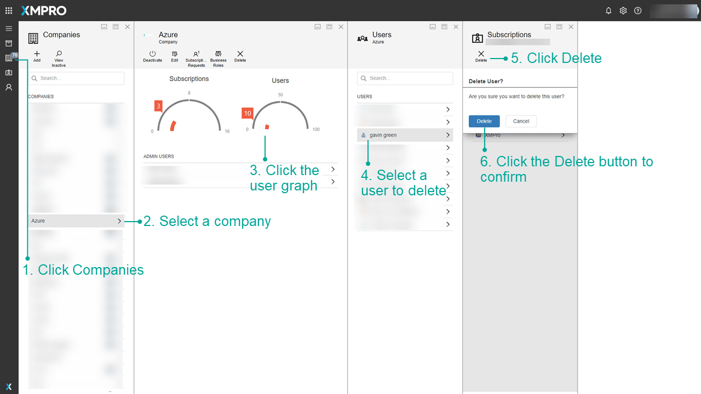

Delete a User
Warning
Please note that this section is intended for Administrative users. No other type of user is allowed to manage a Company's Subscriptions.
To delete users from your company on XMPro, first login as to XMPro as the global administrator.
- Click on the Companies page in the left menu.
- Click on the company to which the user currently belongs.
- Click the Users graph to open the Users blade.
- Select the user you wish to delete, to open the Subscriptions blade.
- Click the Delete User button.
- Click Delete again to confirm the deletion of the user.

Warning
You cannot undo this delete. Ensure their XMPro objects are shared with a co-owner or unpublished.
Last modified: August 15, 2025